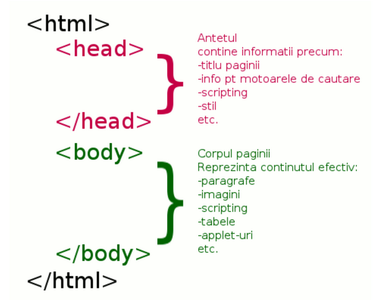

Curs 1 - HTML
Cuprins:
- Privire de ansamblu
- Ce este HTML ? Cum arata o pagina HTML ?
- Cele mai utilizate tag-uri din HTML
- Tema :)
- HTML(HyperText Markup Language): Nu este un limbaj de programare, ci un limbaj de "markup". El ne ajuta sa definim ce elemente apar intr-o site. Imaginea pe care o vedeti mai sus sau paragraful pe care il cititi acum sunt definite folosind HTML. Practic, cu HTML definim structura("scheletul") paginii noastre. Doar cu HTML site-ul pe pe care suntem acum ar arata asa:
- CSS(CascadingStyle Sheets): Nu este un limbaj de programare. Il folosim ca facem site-ul sa arate bine.(culori, demensiunea scrisului, pozitia pozelor etc)
- Javascript: Este un limbaj de programare, dar nu are nicio legatura cu JAVA.(JAVA este alt limbaj de programare complet diferit). Il folosim ca sa adaugam interactiune pentru site-ul nostre. De exemplu, cu Javascript controlam ce se intampla cand apesi pe butonul "Adauga in cos" sau pe "Login".
- audio
- video
- iframe
Imagine de ansamblu

In urmatoarele 12 cursuri vom discuta despre HTML, CSS si Javascript(JS).
Setup
Pentru inceput vom avea nevoie sa instalam Visual Studio Code (este gratuit). Link catre VSCode
Ca alternativa mai la VSCode exista si WebStorm, dar acesta nu este gratuit. Puteti sa-l incercati timp de 30 de zile inainte sa-l cumparati. Noi o sa folosim VSCode in cadrul cursului. Link catre WebStorm
HTML
Mai departe vom discua despre HTML si veti scrie cod pentru data. Inainte sa incepem sa scriem cod este important sa stim 2 lucruri:
I) HTML este format din TAG-URI.

II) Structura unei pagini HTML
Hai sa scriem cod
1) Deschideti VSCode si creati un fisier nou numit "Curs1.html"
See the Pen Untitled by Tapirdea Alexandru (@TapirdeaAlexandru) on CodePen.
Rezultatul final
Tema

Lucrati la CV-ul vostru, in HTML, folosind cat mai multe din tag-urile discutate astazi:
In plus, cititi despre urmatoarele tag-uri si folositile-le in CV-ul vostru(chiar daca in mod normal nu ati pune de exemplu un video in CV):
In cursul urmator veti invata despre GIT si GITHUB. Le veti folosii ca sa va incarcati tema pentru saptamana viitoare.
O sa va arate Bogdan cum il folositi.Gasiti aici explicatii pentru tag-urile de mai sus:
LINK EXPLICATII